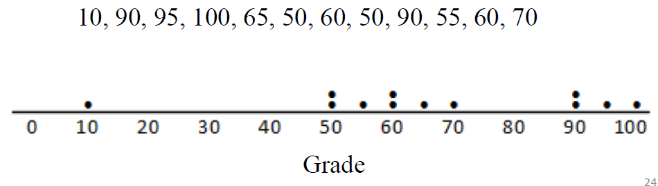
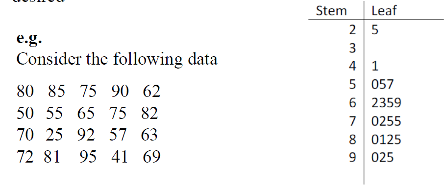
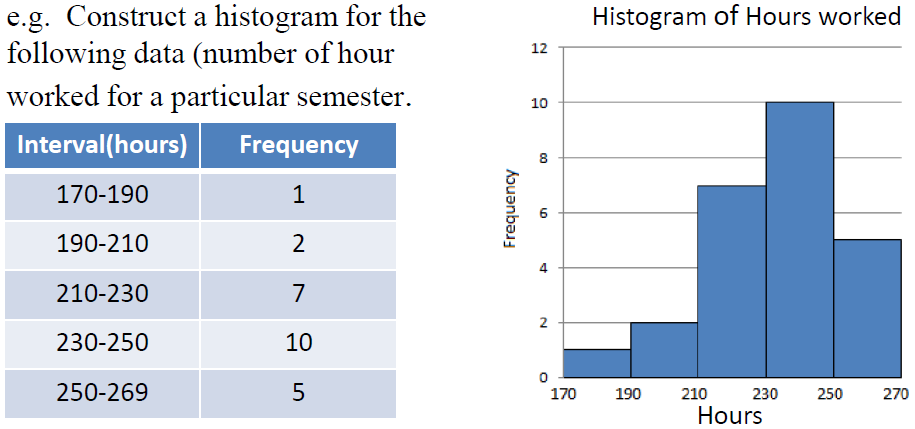
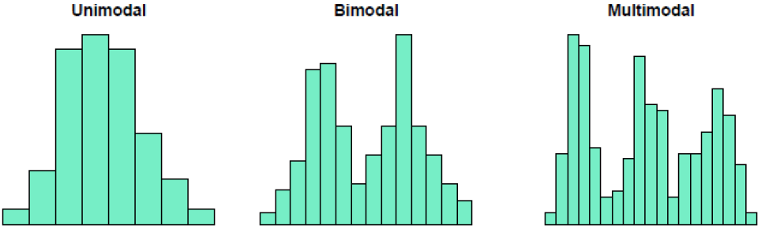
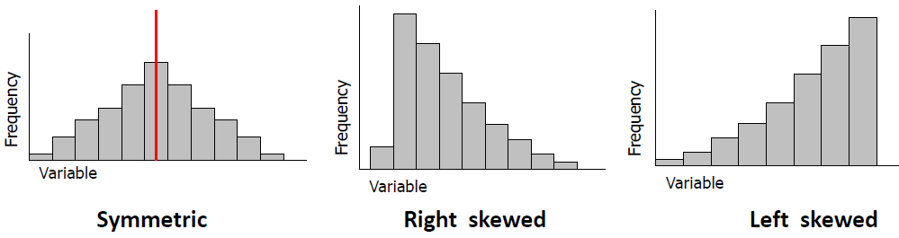
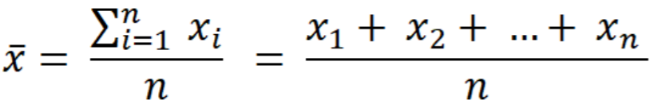
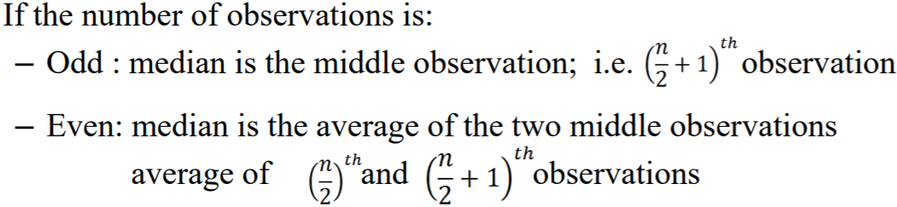
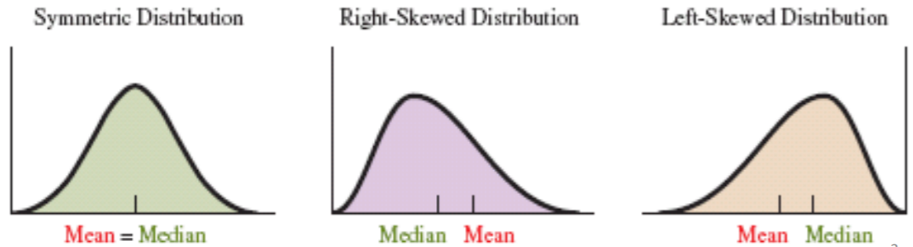
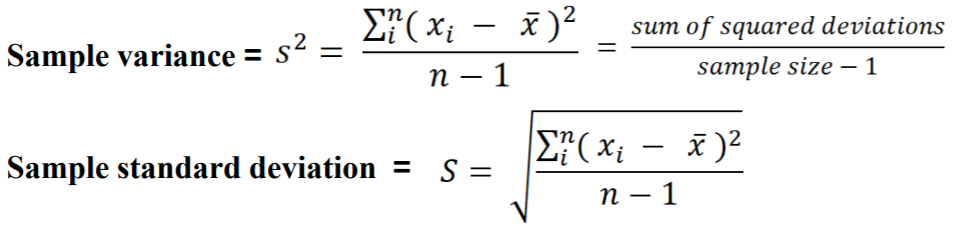
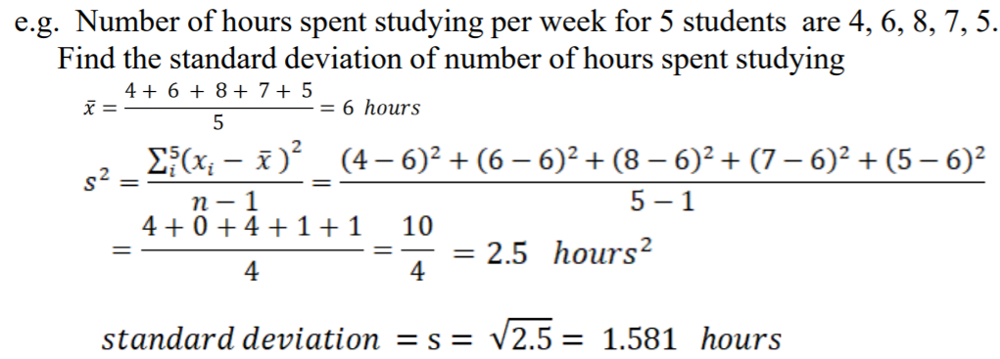

STAT241 Jan 5, 2018 (Chapter 1)
Graphs for Quantitative vars
- Dot plot - horizontal line with values plotted

- Stem-and-leaf plot - observation becomes stem and leaf, stem = vertical column, leaf = row right of stem

- Histograms - easy to see distribution
- Divide range of data into intervals of equal width
- Count # of observations in each interval

Describing Distributions
Mound
- Unimodal - one clear peak
- Bimodal - 2 peaks
- Multimodal - more than 3 peaks

Shape
- Symmetric
- Skewed to left or right

- Center - where data clusters
- Spread - Assess spread of distribution
Outlier - observation that falls far from the rest of the data (extreme value)
Meansures of Center
- Mean - sum of observations / number of observations

- Median - Midpoint of observations when they are ordered small to large

Comparison of Mean and Median
- When mean~median, data nearly symmetric
- Skewed distribution - mean is farther out in long tail than median

Measures of variability
- Gives info on spread or variability or dispersion of data vals
- Range - Difference between largest and smallest val, strongly affected by outliers
- Variance and Standard Deviation


Properties of Standard Deviation
- s measures spread of data
- s = 0, when all values same
- s has same unit of measurement as original observations
- s can be greatly affected by outliers
Interquartile Range (IQR)
- Data set divided into 4 equal parts
- Length of range of an interval that captures the middle 50% of the data
- IQR = Q3 - Q1
- Q1 = First Quartile = 25th percentile is the value in the sample that has 25% of the data below it
- Q3 = Third Quartile = 75th percentile is the value in the sample that has 75% of the data below it
Identifying an outlier
- Observation is an outlier if it falls more than 1.5 * IQR below the first quartile or more than 1.5 * IQR above the third quartile
Main Page